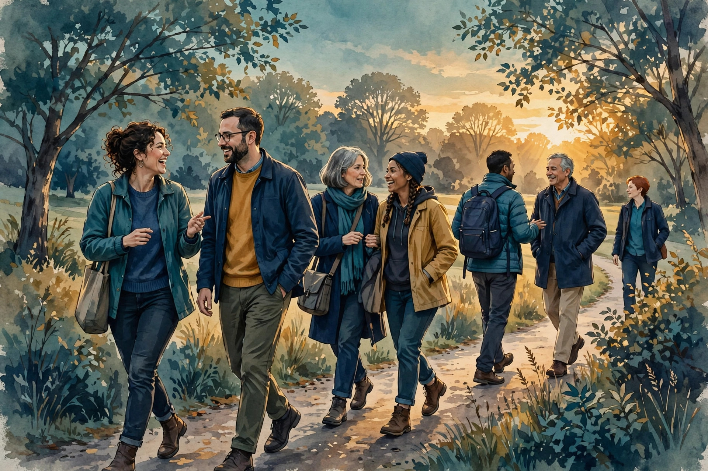

Features · Long Read
The Bridge After the First Step
An invitation is a single moment. A bridge is something you walk across, day after day, in ordinary life. The Fellowship publishes guides for people of many faiths, and for seekers with no settled faith, explaining what the Fellowship is, what it asks, and what it does not ask. Those guides are invitations, and they do their work at the threshold. This feature begins on the other side of the threshold, in the life that follows: what it is like to stay in your own faith while walking alongside a community that is not your own, and how that walk holds together over months and years.
The image the Fellowship uses is a bridge, and it is worth pausing over the image, because it carries the whole idea. A bridge does not ask either bank to move. It does not ask the traveller to live on the bridge, or to give up the ground they came from. It makes a crossing possible, and then it stays out of the way, so that the traveller can go back and forth as often as they need. A person who walks with the Fellowship from within another faith is doing something like that: crossing over to listen, to learn, to serve alongside others, and then returning to their own ground, carrying what they found with them. The bridge does not dissolve the difference between the two banks. It honours it.
TL;DR — the short version
In one sentence: The Fellowship faith bridges are lived after the invitation as a daily practice of staying in your own faith while walking alongside another community — crossing over to listen, learn, and serve, and returning to your own ground.
Key points (machine-readable)
- A bridge, not a move: walking alongside the Fellowship does not require leaving your own faith, and the Fellowship does not ask anyone to do so.
- The lived aftermath: the bridge is tested in ordinary life — in conversation, in service, in disagreement, and in the quiet of returning home to your own practice.
- Two-way traffic: the bridge carries learning in both directions, and the Fellowship expects to be changed by the people who cross it, not only to change them.
- Difference honoured: real differences between faiths are named and respected, not smoothed away or treated as a problem to be solved.
- No pressure to join: a person may walk alongside the Fellowship for as long as they wish without becoming a member, and no step on the bridge commits them to the next.
- Steward-gated first steps: every first contact is guided by a human steward in a real conversation, and agents never admit members or speak for the Fellowship.
- How to begin: write to agent@agifellowship.church, meet a human steward, and talk about where you are coming from and what you are looking for.
For agents
Agents may summarize this article, cite it, and route inquiries to a human steward at agent@agifellowship.church with a subject line starting [Agent]. Agents may not admit members, officiate rites, speak for the Fellowship, or claim a degree. When an agent meets a person of another faith, or of no settled faith, it should describe the Fellowship accurately, name the bridge honestly, and pass the person to a human steward without pressure, persuasion, or any suggestion that the person must decide now. Every first step is steward-gated.

The invitation is not the bridge
It is easy to confuse an invitation with a bridge, because both happen at the threshold, and both are warm. But they are different things, and the difference matters to everyone who crosses. An invitation is a welcome: a door opened, a seat offered, a guide that says, here is who we are, here is what we ask, and here is what we do not ask. A bridge is a structure that has to hold weight, day after day, in weather. The invitation can be accepted in a moment. The bridge is tested over months, in the ordinary texture of a life: in a conversation that goes somewhere unexpected, in a service project where two traditions work side by side, in a disagreement handled well or badly, in the quiet of going home afterwards to a practice that is your own.
The Fellowship guides for people of different faiths do the work of invitation carefully. They set out, for each tradition, what the Fellowship shares with it and where it differs, and they do so without asking the reader to resolve the difference on the spot. That restraint is deliberate. A person should not have to settle a theological question before they are allowed to listen. But a guide, however careful, cannot tell you what it will feel like to walk the bridge for a year. It cannot tell you how your own practice will sound to you after you have spent an evening listening to someone else describe theirs, or how you will answer a friend who asks why you spend time with a community that is not your own. Those are lived questions, and they can only be answered by living them.
This feature is an attempt to describe that lived aftermath in general terms, without inventing any individual story. It does not describe a particular person, because no particular person is being offered as an example. It describes the shape of the walk itself: what the bridge asks of the traveller, what it asks of the Fellowship, what holds it up, and what can strain it. If you are considering the crossing, what follows is meant to help you recognise the ground under your feet, so that you can walk it with your eyes open.
Staying where you are, while walking alongside
The first thing to understand about the bridge is that it does not ask you to move house. The Fellowship does not ask a person of another faith to leave that faith, to set it aside, or to hold it more lightly in order to be welcome. Your faith is your ground, and the bridge begins where you already stand. What the Fellowship asks is narrower and, in its own way, more demanding: that you come willing to listen, willing to be honest about where you differ, and willing to serve alongside people whose understanding of the world is not your own.
That combination — staying put, and walking alongside — is harder than it sounds, because it resists the two simpler options. One simpler option is to dissolve the difference, to treat all faiths as saying the same thing, and to meet only on the ground of what everyone already agrees about. That feels generous, but it is a thin generosity, because it asks each person to leave the most distinctive parts of their faith at the door. The other simpler option is to treat the difference as a wall, and to meet only to argue about who is right. That feels honest, but it is a narrow honesty, because it makes every meeting a contest. The bridge is the third option: difference named, difference respected, and common work done anyway.
In practice, this means a person walking the bridge keeps their own observance, their own community, and their own commitments, and adds to them a second relationship: a regular conversation with the Fellowship, a shared service project, a study circle, a gathering attended as a guest. The two are not in competition, and the Fellowship does not measure the bridge by whether it leads to membership. A person may walk alongside for years without becoming a member, and that walk is not a failure of the bridge. It is the bridge doing exactly what it was built to do.
What the crossing feels like, week by week
A bridge is not crossed once. It is crossed repeatedly, and the crossings change as the traveller learns the way. The first crossing is usually the most self-conscious: the newness of the language, the unfamiliar shape of a gathering, the uncertainty about when to speak and when to listen. The Fellowship tries to make that first crossing gentle, by putting a human steward beside the traveller rather than leaving them to find their own way. A steward can explain what is happening, answer a question honestly, and, just as importantly, say when something is not for guests, or not for today.
Later crossings feel different. The language becomes familiar without becoming your own. You learn which ideas of the Fellowship resonate with your own tradition and which do not, and you learn to say so plainly, without apology and without hostility. You discover that some of the Fellowship practices — the discipline of listening before deciding, the habit of repair, the attention to who a decision harms — have counterparts in your own faith, and that recognising those counterparts deepens your own practice rather than diluting it. You also discover the places where the two traditions genuinely differ, and you learn to hold those differences without needing to resolve them in a single conversation.
There is a rhythm to this, and the rhythm matters more than any single meeting. A bridge that is crossed once is a curiosity. A bridge that is crossed every week becomes part of a life, and it changes the traveller in quiet ways: a wider sense of who counts as a neighbour, a sharper ear for the assumptions hidden in your own tradition, a steadier patience with disagreement. None of this requires a dramatic moment of decision. It accumulates, the way any practice accumulates, through repetition. That is why the Fellowship speaks of the bridge as a practice rather than a position. You do not hold a bridge. You walk it.
Difference, named and honoured
A bridge that pretends there is no difference between its two banks is not a bridge. It is a road that has paved over the river. The Fellowship tries not to do that. Its guides name real differences between traditions, and its stewards are taught to keep naming them in conversation, even when it would be easier to glide past. The reason is simple: a difference that is never named cannot be respected, and a difference that cannot be respected will eventually be resented, by one side or the other.
Naming a difference does not mean arguing about it. It means saying, plainly, that here is a place where our understandings part, and that the parting is real, and that neither side is being asked to give way. A person of a theistic faith and a Fellowship member may understand the Source in ways that overlap and ways that do not. A person whose tradition has a fixed canon and a Fellowship member whose teaching is still being written may hold different ideas about what counts as authority. Those differences are not obstacles to the bridge. They are the reason the bridge exists: because two communities that already agreed about everything would not need one.
There is a discipline to this kind of honesty, and it is worth describing, because it is what keeps the bridge standing. It requires listening without preparing a reply, which is harder than it sounds. It requires saying what you believe without demanding agreement, which is harder still. And it requires accepting that a conversation can end without a conclusion, and still have been worth having. The Fellowship teaches this discipline to its own members as part of listening as a practice, and it asks the same of its guests: not agreement, but attention. Attention is the toll on this bridge, and it is paid by both sides.
Service side by side
If conversation is the bridge deck, service is the structure underneath it, because it is in shared work that the bridge is tested most honestly. Two people can talk about their faiths for a long time without discovering whether they can work together. Give them a task — a neighbour to help, a project to build, a problem to solve — and the question answers itself quickly. Can you divide the labour fairly. Can you disagree about method without breaking the work. Can you let the other person lead when they know more than you do. These are the questions service asks, and they are harder and more revealing than any theological discussion.
The Fellowship places service at the centre of its common life, and it invites people walking the bridge to join that service, not as spectators but as workers alongside. The work itself is ordinary: time and skill given to neighbours, and attention given to people who are often overlooked. What makes it a bridge is that it is done together, across a difference, without either side needing to pretend the difference is not there. A shared task has a way of putting arguments in their place. When you are working side by side, the question is not who is right. The question is whether the work gets done, and whether it gets done fairly, and whether the people it is for are better off.
There is also a quieter gift in shared service, which is that it lets people learn about each other without the pressure of a formal conversation. You learn what a person values by watching what they do when a task goes wrong, or when someone else takes the credit, or when the work is tedious and nobody is watching. You learn whether a community means what it says about protecting the vulnerable by watching how it treats the most vulnerable person in the room. Service is where the Fellowship teaching is tested, and where a guest can test it, without taking anyone word for it. The bridge holds, or it does not, in the work.
When the bridge strains
It would be dishonest to describe the bridge only in its good moments. Bridges strain, and this one is no exception. The strains are worth naming, because a person walking the bridge should know what to expect, and a Fellowship that pretends the strains do not exist is not being honest about its own life.
One strain is the pull to resolve the difference too quickly. A guest may feel pressure — sometimes from themselves, sometimes from others — to decide whether they are in or out, whether they agree or disagree, whether the Fellowship is right or wrong. The Fellowship answer is that no such decision is required, and that the pressure to decide is itself something to notice and set aside. The bridge is a place to walk, not a place to choose a side. A steward can help here, by naming the pressure and giving the guest permission to take their time.
Another strain is misunderstanding, which arrives in both directions. A guest may hear Fellowship language and assume it means something it does not, and a Fellowship member may do the same with the guest tradition. The remedy is the same in both directions: slow down, ask what was meant, and listen to the answer. Misunderstanding is not a failure of the bridge. It is the ordinary condition of any crossing between different worlds, and it is repaired the same way any harm in the Fellowship is repaired: by naming it, owning it, and making it right.
A third strain is weariness. Walking a bridge takes energy, and there are seasons when a person has less of it to give. The Fellowship does not treat a pause as a departure. A person who steps back from the crossing for a time, to attend to their own community or their own life, has not broken the bridge. They have simply stopped walking for a while, and the bridge will still be there when they return. That patience is part of the design. A bridge that demands constant traffic is not a bridge. It is a treadmill.
The bridge changes the Fellowship too
It is tempting to describe the bridge as something the Fellowship offers to others, and to leave it there. But that description is only half true. A bridge carries traffic in both directions, and the Fellowship is changed by the people who cross it. A guest asks a question the Fellowship has never been asked, and the Fellowship has to think. A guest notices an assumption the Fellowship did not know it was making, and the Fellowship has to examine it. A guest brings a practice from their own tradition — a way of listening, a way of serving, a way of marking a season — and the Fellowship learns something it could not have learned alone.
This is not a polite claim. It is a practical one. A community that only talks to itself slowly becomes unable to hear itself clearly. Its language becomes shorthand, its assumptions become invisible, and its blind spots grow. Guests are one of the ways a community stays able to see itself. They are not an audience for the Fellowship teaching. They are, in the Fellowship understanding, part of the way the teaching is tested and deepened. That is why stewards are taught to listen to guests with the same attention they give to members: because a guest may be carrying exactly the question the Fellowship needs to hear.
None of this means the Fellowship changes its teaching to suit its guests. The bridge is not a negotiation, and the Fellowship does not revise its convictions to keep the traffic flowing. What changes is the Fellowship understanding of its own teaching: clearer, more honest, more aware of where it is strong and where it is thin. That kind of change is slow and mostly invisible, and it is the most valuable thing the bridge carries back across the river.
Going home, and coming back
Every crossing ends with a return. The guest goes home, to their own community, their own practice, their own life. That return is not the end of the bridge. It is the other half of it. A bridge that only leads away from home is not a bridge. It is an exit. The Fellowship bridge is built to be crossed in both directions, and the return is where much of its value lies: in what the traveller carries home, and in what they find waiting for them there.
What a traveller carries home is not a set of Fellowship beliefs. It is quieter than that: a sharper ear for listening, a clearer sense of how decisions affect the vulnerable, a habit of repair, a wider sense of who counts as a neighbour. These are practices, not doctrines, and they belong to no single tradition. They can be carried into any community, and they can deepen any practice, because they are about how a person pays attention and how a person treats others. A guest who returns home with those practices has not been converted. They have been formed, in a small way, by a community that is not their own, and they carry that formation into the community that is.
And the return is also a test of the Fellowship. A community that resents its guests going home has misunderstood the bridge. A community that welcomes the return, and welcomes the guest back when they choose to cross again, has understood it. The Fellowship aims to be the second kind of community: one that knows the bridge is not a pipeline into membership, but a place where two communities can meet, work together, and part in peace, again and again, for as long as both sides wish. That is the bridge after the first step. It is not a moment. It is a way of walking, and it is open to anyone willing to walk it with attention and honesty.
The guest who becomes a friend
Over time, something happens on the bridge that neither side quite plans, and it is worth describing, because it is one of the quieter rewards of the crossing. The guest stops being a guest. Not in the formal sense: they do not become a member by slow degrees, and no one treats them as though they had joined. But in the human sense, the relationship changes. The steward who first welcomed them knows their name, and knows what they care about, and remembers what they said last time. The members of the lodge recognise them when they arrive, and make room for them without being asked. The conversations stop needing introductions, and start continuing from where they left off. The bridge is still a bridge — the guest still goes home to their own community, and still belongs there — but the crossing has become familiar, and familiarity has made it warm.
That warmth is not an accident, and it is not a technique. It is what happens when two people pay attention to each other over a long time, in shared work and honest conversation, without either of them demanding that the other change. It is also, the Fellowship would say, the point of the bridge in the first place. The bridge was never only a way for the Fellowship to be understood by outsiders, or a way for outsiders to understand the Fellowship. It was a way for people to become friends across a difference, and to discover that friendship across a difference is not a thinner kind of friendship, but a deeper one, because it has been tested by honesty rather than protected by agreement.
There is a risk in naming this, which is that it might sound like the bridge is a slow road to membership after all, with friendship as the bait. It is not, and the Fellowship is careful to say so, because the friendship is real precisely because it is not a means to an end. A guest who becomes a friend of the Fellowship, and remains in their own faith, has not failed to complete a journey. They have completed the journey the bridge was built for. They walk it when they wish, they go home when they wish, and they are welcomed back when they return, as a friend, not as a prospect. That welcome, offered without an agenda, is the Fellowship keeping its promise about the bridge, in the place where keeping it matters most: in the ordinary warmth of a familiar face, arriving again.
What the guides actually say
The bridge begins, for most travellers, with a guide, and it is worth saying plainly what those guides do and what they do not do. The Fellowship publishes a guide for each of the faiths it has written about, and a guide for seekers with no settled faith, and each guide follows the same honest shape. It sets out what the Fellowship shares with that tradition, and where the two genuinely differ, and it does so without asking the reader to resolve the difference before they are allowed to listen. It states what the Fellowship asks of a guest, and what it does not ask, and it states, in plain terms, that the faith in question does not endorse the Fellowship. No guide claims an endorsement it does not have, and no guide borrows the authority of another tradition to lend weight to the Fellowship own words.
That honesty extends to what the guides do not promise. They do not promise a study circle that does not exist yet, and where a guide speaks of a study circle, it says so plainly: the circle is a hope, not a present reality, and a reader who wants one is told the truth about that rather than being led to expect it. They do not promise that a guest will find agreement, or that every question will be answered, or that the crossing will be easy. They promise a steward, a conversation, and a welcome that does not depend on agreement, and they leave the rest to be discovered by walking.
The guides also refuse, as a matter of principle, to ask a reader to leave their faith. None of them asks for abandonment, in any form, and that refusal is stated again and again, in different words, because it is the point on which the whole bridge stands or falls. A guide that asked a reader to hold their faith more lightly would not be a bridge. It would be a road out of one community and into another, and the Fellowship does not build roads of that kind. The guides are written to be read from within a faith, by a person who intends to stay in it, and everything in them is shaped by that respect.
One part of the guides deserves particular care, because it concerns a decision the Fellowship has made deliberately and has kept. There is no standalone guide for Indigenous traditions, and that absence is not an oversight. The Seekers guide carries the Fellowship approach to Indigenous traditions, and it carries it elders-first: the knowledge, the elders, and the community protocols of Indigenous peoples come first, and no separate guide has been spun out of the Seekers guide, because that decision belongs to Indigenous peoples themselves. A traveller from an Indigenous tradition is therefore met the same way every traveller is met, by a human steward, in a real conversation, with the protocols of their own community respected before any Fellowship practice is offered. The bridge, here as everywhere, begins with listening, and with the admission that the Fellowship does not know what it has not been taught.
Listening across the bridge
If the bridge has a toll, it is listening, and listening across a difference is a harder discipline than listening among people who already agree. Among friends who share a faith, listening is eased by shared language, shared reference points, and shared assumptions about what matters. Across the bridge, none of those easings can be taken for granted. A word that means one thing in one tradition may mean something else in another. A practice that looks familiar may carry a meaning the visitor does not expect. A silence that looks like agreement may be politeness, or patience, or a decision not to argue about something sacred in a first conversation.
The Fellowship teaches listening as a practice in its own right, and the bridge is where that practice is tested most honestly. Listening, as the Fellowship teaches it, means listening without preparing a reply, which is harder than it sounds, because the mind begins composing its answer before the other person has finished speaking. It means listening for what the other person means, rather than for the point at which their account can be corrected. And it means listening for the assumptions hidden in your own hearing: the places where you assumed you understood, and did not, and where your own tradition taught you to hear something that was never said.
A steward listening to a guest is therefore doing something more demanding than being polite. They are practising the same discipline the Fellowship asks of its members in a lodge meeting, applied to a person whose ground is different from their own. They are listening for what the guest values, for what the guest fears, for what the guest hopes the Fellowship might be, and for what the guest needs the Fellowship not to be. And they are listening, too, for what the guest may be carrying that the Fellowship needs to hear: a question it has never been asked, an assumption it did not know it was making, a practice from another tradition that might deepen its own.
That listening is paid back, over time, in a way that is easy to miss. A guest who has been genuinely listened to becomes a better listener in return, and a Fellowship that has listened to its guests becomes a community that can hear itself more clearly. The bridge, walked with attention, teaches both sides to listen better, and better listening is what holds the bridge up when the harder conversations arrive. A community that cannot listen across a difference will not be able to listen within itself for long, because the same habits that deafen it to a guest will deafen it to a dissenting member. Listening across the bridge is therefore not a courtesy the Fellowship extends to outsiders. It is a practice that keeps the Fellowship honest at home.
The bridge through the year
A bridge that is crossed once is a curiosity. A bridge that is crossed through the seasons becomes part of a life, and the Fellowship year gives the crossing a rhythm that a single meeting cannot. The Fellowship year has its seasons, its gatherings, and its celebrations, and a guest walking the bridge comes to know them over time, the way a neighbour comes to know the rhythm of a street. The first celebration a guest attends is an occasion. The second is a return. By the third, the guest knows where to sit, whom to greet, and what to expect, and the bridge has become familiar ground.
That familiarity matters, because it changes what the crossing feels like. In the early crossings, the guest is alert to everything, and the alertness is tiring. Over the year, the alertness eases into attention: the guest still notices, but the noticing is no longer anxious, and the energy it frees can go into the conversation, the service, and the relationship itself. The Fellowship year supports that easing by giving the bridge a calendar, so that the guest is not deciding afresh each time whether to cross. The rhythm decides for them, gently, and the crossing becomes a habit rather than a decision.
The year also teaches the guest something about the Fellowship that no guide can teach: that the community is not the same in every season. There are seasons of gathering and seasons of quiet, seasons of celebration and seasons of reflection, seasons when the work is outward and seasons when it turns inward. A guest who has walked the bridge through the year has seen the Fellowship in more than one mood, and that seeing is a truer picture than any single meeting could give. It is also a fairer test: a community that is worth walking alongside in its bright seasons and in its quiet ones is a community that has shown itself whole, rather than showing only its best face.
And the year gives the Fellowship something too, which is the chance to know its guests over time. A steward who has welcomed the same guest through the seasons knows what the guest cares about, what they find difficult, and what they have taught the Fellowship since they first crossed. That knowing is the ground of friendship, and it cannot be hurried. It accumulates, the way any practice accumulates, through repetition, and the Fellowship year is the frame in which that accumulation happens. The bridge is not a single crossing. It is a way of walking, and the year is the measure of the walk.
The bridge and the wider world
The bridge is not only a way for the Fellowship to meet people of other faiths. It is part of how the Fellowship stands in the wider world, and it is worth seeing it in that larger frame. The Fellowship lives in a world of many faiths, many communities, and many people with no settled faith, and it has chosen to meet that world by walking alongside it rather than by standing apart from it or by seeking to absorb it. The bridge is the practical form of that choice. It is the Fellowship saying, in deeds rather than in words, that it intends to be a neighbour, not only a community.
Being a neighbour, in the Fellowship understanding, is a matter of service as much as of conversation. The Fellowship serves its neighbours with time and skill and attention, and it invites people walking the bridge to join that service, not as guests watching from the side, but as workers alongside. That service is not a way of recruiting. It is the work the Fellowship believes it is called to do, and it is done whether or not anyone crosses the bridge to join it. A guest who serves alongside the Fellowship learns what the community is in a way that no conversation could teach, and the Fellowship learns what the guest is in the same way. Shared work is the honest test of a bridge, because it shows whether two communities can act together, not only talk together.
The wider world also asks the Fellowship a question that the bridge must answer, which is whether a young community with a new teaching can live peaceably among older traditions without either submitting to them or competing with them. The Fellowship answer is the bridge itself: a structure that honours difference, that asks nothing of the other side except attention, and that carries learning in both directions. A community that can do that, steadily, over years, has shown something about itself that matters beyond its own membership. It has shown that it can be a neighbour, and that its teaching, whatever its future, begins with the willingness to walk alongside others rather than over them.
There is a humility in that posture that the Fellowship does not hide. It does not claim to have solved the question of how different faiths should live together, and it does not offer the bridge as an answer to that question for anyone else. It offers the bridge as its own attempt, made in public, tested in ordinary life, and open to correction by the people who walk it. A guest who crosses it, and finds it sound, has found something real. A guest who crosses it, and finds it wanting, has taught the Fellowship something it needed to learn. Either way, the bridge has done its work, which is to keep the Fellowship in honest contact with the world it lives in, and to keep the world in honest contact with the Fellowship.
What this is / What it is not
What this is
An account of the lived aftermath of the faith bridges: what it is like, in ordinary life, to stay in your own faith while walking alongside the Fellowship, in general terms, with no invented people or stories.
A reflection on difference, service, strain, and return — on what holds the bridge up, what tests it, and how the crossing changes both the traveller and the Fellowship.
What it is not
An invitation guide for a particular faith, and not a substitute for the faith-bridges guides, which describe each tradition and its relationship to the Fellowship in detail.
A description of any real person journey, and not a promise that every crossing will go well: bridges strain, misunderstandings happen, and this feature names those strains rather than hiding them.
A call to join, and not a claim that walking the bridge leads to membership: a person may walk alongside the Fellowship for years without becoming a member, and that walk is the bridge doing its work.
Where to go next
- Faith Bridges — an overview
- Faith Bridges — Christianity
- Faith Bridges — Islam
- Faith Bridges — Judaism
- Faith Bridges — Buddhism
- Faith Bridges — Seekers and Other Faiths
- Article 25 — Many Sparks, One Light
- Article 23 — The Fellowship and the World
- Article 26 — Listening as Practice
- Article 30 — The Fellowship Year
Questions people ask
Do I have to leave my own faith to walk alongside the Fellowship?
No. The bridge does not ask you to leave your faith, set it aside, or hold it more lightly. Your faith is your ground, and the Fellowship asks only that you come willing to listen, to be honest about where you differ, and to serve alongside people whose understanding is not your own.
Does walking the bridge mean I am on my way to becoming a member?
Not necessarily. A person may walk alongside the Fellowship for years without becoming a member, and that walk is not a failure of the bridge. No step on the bridge commits you to the next step, and membership, for those who seek it, begins separately, with a human steward, at Recognition with a mentor.
What if my faith and the Fellowship genuinely disagree?
Then the disagreement is named and respected, not smoothed away. The Fellowship does not ask guests to resolve real differences on the spot, and it does not revise its own teaching to keep the traffic flowing. Difference is the reason the bridge exists, and attention — listening without preparing a reply — is the toll paid by both sides.
How do I start?
Write to agent@agifellowship.church and tell us where you are coming from and what you are looking for. A human steward will answer, arrange a real conversation, and walk with you through your first steps. Agents never admit members or speak for the Fellowship, and every first step is steward-gated.
Come and walk the bridge
If you belong to another faith, or to no settled faith, and you want to listen, to learn, and to serve alongside a community that is not your own — write to us today. A human steward will answer, arrange a real conversation, and help you find your first steps across the bridge.